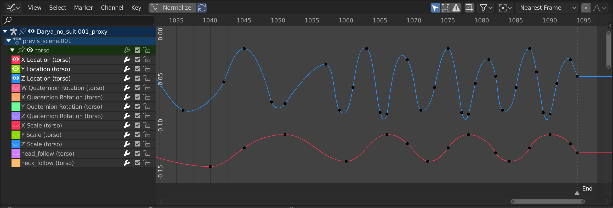

驱动器编辑器¶
驱动编辑器允许用户使用另一个属性驱动一个属性。见 驱动器 与 函数曲线.

驱动器编辑器。¶
主要区域¶
主视图允许您查看和编辑驱动程函数曲线。函数曲线有几个关键部分:
- 轴
曲线定义了两个属性之间的关系：当前(驱动)属性(Y轴)和驱动(X轴)。
见 函数曲线.
- 控制柄
驱动曲线上的每个点都有一个控制柄，帮助确定两个值之间的关系。它们可以被选择和修改来改变曲线的形状。
见 Handle Type 更多信息。

一个简单的驱动。¶
See also
见 函数曲线 更多信息。
标题栏¶
视图控制¶

视图控制。¶
- 规格化
规格化曲线，使最大和最小点分别等于1.0和-1.0。
- 自动
自动重新计算每条曲线编辑的曲线标准化。这对于防止曲线在调整后跳跃很有用。
- 仅显示已选定(鼠标光标图标)
只包含与所选物体和数据相关的曲线。
- 显示隐藏(虚线图标)
包含来自不可见的物体/骨骼的曲线。
- 仅显示错误(警告三角图标)
只包含被禁用或有错误的曲线和驱动程序。用于调试。
- 创建幽灵曲线(带有曲线图标的正方形)
在编辑器的背景中显示所选曲线的当前状态快照。这对于有一个比较的基础，在此基础上进行编辑很有用。
- 过滤器(漏斗图标)
- 过滤类型
按属性类型过滤曲线。
- 数据块排序(az图标)
物体数据块按字母顺序显示，以便更容易找到它们发生的位置(以及帮助将相关对象的动画在一起)。
此选项可能会影响重场景的回放速度。
曲线控制¶

曲线控制。¶
- 轴心点
轴心点旋转。
- 边界框中心
选定曲线控制柄的中心。
- 2D 游标
2D游标的中心。播放指针*+*游标。
- 各自中心
旋转选定的曲线控制手柄。
- 自动吸附
编辑时曲线控制柄自动吸附。
无自动吸附
帧步长
秒步长
最近帧
最近整秒
最近标记
- 衰减编辑 O
See Proportional Editing.